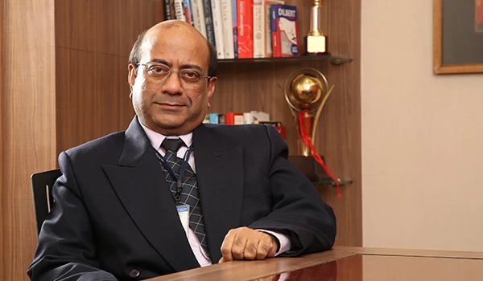
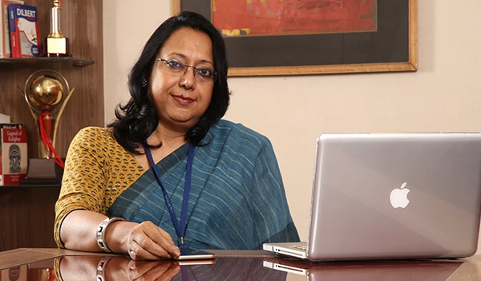
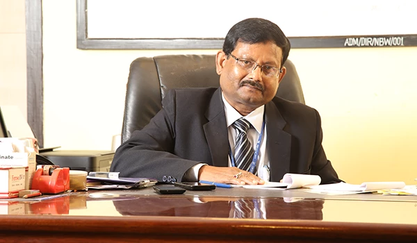

The Engineering Institute was inaugurated in June, 2002 by the Hon'ble Chief Minister of West Bengal.
The Business School was flagged off with the blessings of Prof. Jagdish Seth of Emory University, US who
is a recipient of world's highest Marketing Educator Award conferred by American Marketing Association
in 2003 and 2004.
We aim to provide Wide Angled Learning by imparting core values to students thus moulding them as strong
independent individuals with excellent attitude, skills and knowledge.
To deliver high quality education in the fields of Engineering and Management, augmented by research and
training services to fulfill the life-long learning needs and aspirations of students in diverse range
of settings.
➢ ➢ ➢
To create opportunities for students to acquire and develop personal, social and professional knowledge,
skills and values through a knowledge driven teaching learning environment.
➢ ➢ ➢
To meet the growing and ever-changing needs of Industry for trained manpower and effective co-creation
of value for the students to the mutual advantage of Industry and the Institute.
➢ ➢ ➢
To augment entrepreneurship endeavors.

As quality and only quality, serve as the basic motive force at Future Institute of Engineering and
Management (FIEM), we always get it back reflected behind all operational aspects of functioning,
like high-end placement performance since inception, faculty selection academic performance and E
student intake.
As we embark upon the new academic year, it is an occasion to acknowledge,
with
deep gratitude, the great faith reposed on us by corporate recruiters who came in and recruited our
students in large numbers across all disciplines. The significant effort put forth by faculty and
staff of the institute in ensuring world class academic and service delivery, and the tremendous
endeavor of our students both in securing high grade points in university examinations and in
securing top grade placements with the most reputed companies.
These remarkable achievements have been reciprocated, year after year, by the increasing sense of
trust bestowed upon the institute by students, guardians, corporate clients, statutory and
regulatory bodies and collaborating institutes of international repute.
It encourages us to rededicate ourselves with a renewed vigour to the great cause of nurturing young
serving the industry needs for trained manpower and continuing training and fulfillment of academic
needs for on-going applied research in emerging areas of technology and management
It is with a much greater confidence today that we welcome students, trainees, corporate recruiters,
industry partners, collaborators and researchers in academic and applied learning areas.

At Team Future - Education initiatives, we are constantly striving for excellence to fulfill a
mission to create leaders for tomorrow by nurturing young minds to become skilled professional as
well as intellectual global citizens
Our vision to provide wide angle learning have zeroed down on three distinct areas of focus
• Academic excellence
• Personal values
All our Engineering and Management study programmes spares no effort to make the curriculum world
class and deliver it in the most effective manner. The latest trends in education are incorporated
as a part of the evolving pedagogical environment. The team constantly scans the developments in
business and in society and tries to proactively meet the challenges in the best possible
manner.
We try to recruit the best faculty in all the disciplines. We help our students to
imbibe
global culture and values and serve the students and industry with great dedication. We strongly
believe that the primary prerequisite of the existence and success of a business enterprise is its
contribution to the society at large. We try to awaken this realization in our students through our
own practice of service through commitment, integrity and honesty. We are committed to impart
necessary skill set and knowledge to our students in the best possible manner, in good spirit and in
a good environment, allowing them to dream big and encouraging them to achieve the
We look forward to everything that we can accomplish together today, tomorrow and forever. Cheers to
Team Future!

Ever since its inception, Future Institute of Engineering & Management (FI EM) has been constantly
progressing to achieve the desired excellence in implementation of teaching and learning practices
Continuing the tradition of developing academics with total quality, the institute has made
consisters and commendable progress over years.
One of the major pillars of success of the institute has been its efficient and effective Training &
Placement Cell ensuring top quality placements for all our students every year since inception. A
few of the top corporate houses who have recruited our students are Cognizant Technology Solutions,
Infosys, Tata Consultancy Services, HCL Technologies, Hewlett-Packard, IBM, Accenture, Aditi
Technologies, Capgemini, Al RTEL, Mphasis, Tata Steel Distribution and Processing Ltd., BOC, L&T
Ltd... Torry Harris, Computer Science Corporation, Hexaware Technologies, Sapient TCE Consulting
Engineers Wartsila, Petron Engineering, ACC Ltd., Honeywell, Tata Auto component, Schneider
Electric, Excelacom, SANMAR GROUP, ITC Infotech, L&T Infotech Ltd., Green Ply, Sevcon, Zensar
Technologies. Syntel. Sunil Hightech Engineers. etc.
I am confident about the exceptional caliber and academic acumen of our students. I am also sure
that our students will find opportunities and support they need for their progress and career
development from this institute, which will help them in making a truely rewarding career in the
irfdustry. Our endeavours are aimed at enhancing quality of academics and overall personality
development of students as leaders of Future India.
➢➢ EDUSAT video conferencing facilities
➢➢ AXIS Bank Extension Counter.
➢➢ An optic fiber cabled Automatic Dit Telephone Exchange set up by the Lor
Government of India, serves as a part of the electronics laboratory.
➢➢ Reprographic Section with photocopying facilities at subsidized rates.
➢➢ A dedicated high-tension Sub-Station for 1 power supply.
➢➢ Full Capacity Generating Sets as alternate power sources.
➢➢ 3 AC Auditorium with 100, 300, 850 seater capacity.
➢➢ E-mail, fax, ISD/ISDN/STD, and Video conferencing facilities.
➢➢ Twelve Hundred Seater AC Placement Auditorium- "Sumantra Ghoshal Hall".
➢➢ A subsidized Stationery Store for students.
➢➢ Separate Canteens for faculty and students with provisions of subsidized
lunch, snacks and beverages.
➢➢ Playground for outdoor games like Football and Cricket, Basket ball and
Badminton.
➢➢ Separate Common Rooms for boys and girls with recreational facilities.
➢➢ Anti Ragging Committee and a Disciplinary Committee for addressing student
concerns.